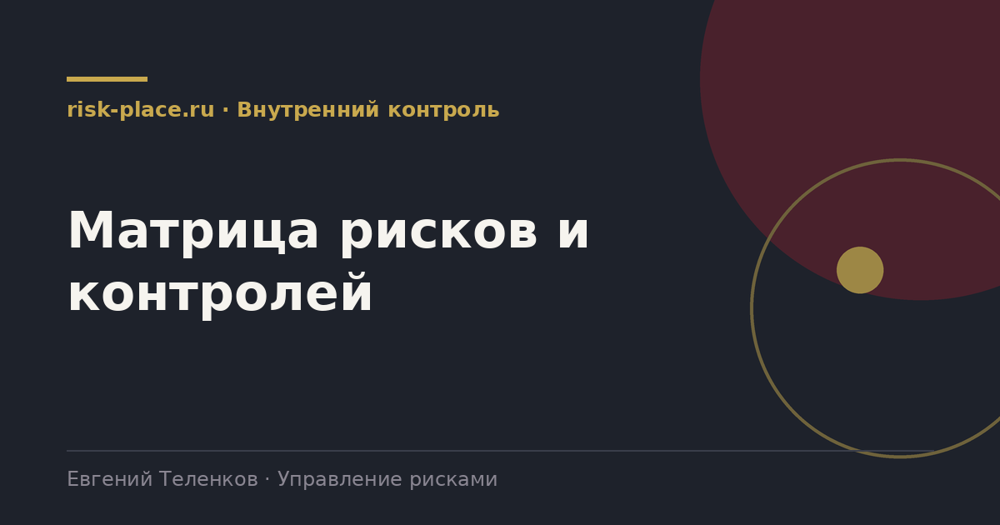

Главная · Библиотека · Внутренний контроль · Матрица рисков и контролей
Библиотека · Внутренний контроль
Матрица рисков и контролей показывает, какой контроль закрывает какой риск и работает ли он. Разбираем состав по столбцам и приводим заполненный пример.

Матрица рисков и контролей это таблица, где по строкам идут риски процесса, а по каждому риску перечислены контрольные процедуры, которые его закрывают. Для каждого контроля указано, кто выполняет, когда, какой оставляет след и насколько он эффективен по результатам тестирования.
Ценность в двух вещах, которые видны только в таком виде. Первое, разрывы, риски без единого контроля. Второе, избыточность, риски, на которых висит по четыре процедуры при умеренном влиянии.
Минимум, ниже которого документ перестает быть полезным.
| Колонка | Содержание |
|---|---|
| Процесс и подпроцесс | Привязка, без нее матрица не собирается по компании |
| Риск | Формулировка по конструктору, событие и последствие |
| Уровень риска | Из реестра, чтобы видеть, где контроль обязателен |
| Контроль | Описание процедуры одним предложением |
| Тип | Предупреждающий или выявляющий, ручной или автоматический |
| Исполнитель и периодичность | Должность и частота |
| След | Что остается как доказательство |
| Ключевой | Признак ключевого контроля для обязательного тестирования |
| Результат теста | Дата, вывод, отклонения |
| Разрыв или план | Что делать, если контроля нет или он не работает |
Матрица это вход сразу для трех процессов. Для планирования проверок внутреннего аудита, он идет туда, где высокий риск и слабые контроли. Для программы автоматизации, кандидаты на автоматизацию это ручные контроли на высоких рисках с большим объемом операций. Для оптимизации процессов, избыточные контроли снимаются и процесс ускоряется без роста риска.
Строить матрицу сразу по всей компании не нужно и почти всегда бесполезно. Разумно начать с трех-четырех процессов, где сосредоточены деньги и обязательства, закупки, платежи, продажи и договорная работа, отгрузка и склад. Остальное добавляется по мере необходимости.
Частые вопросы
Одна форма для любого вопроса
Расскажем о ближайших датах, предложим формат под ваш состав участников и назовем порядок бюджета.
Предпочитаете почту — напишите на info@risk-place.ru. Адрес: Москва, улица Скаковая, 32с2.
 risk-
risk-